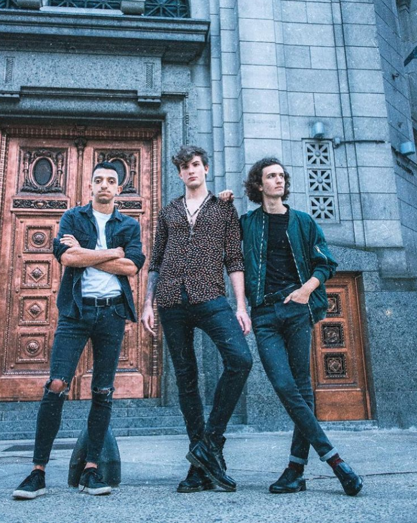

Comienzos
A falta de espacios para mostrar su música, Exilio Púrpura se dan a conocer en la escena underground a través de las redes. Comenzaron la producción de su primer EP en 2020 durante plena pandemia mundial, el cuál sigue en desarrollo. La banda se autocategoriza como una mezcla entre el Rock Alternativo, Indie Pop, Space Rock e Indie rock.
